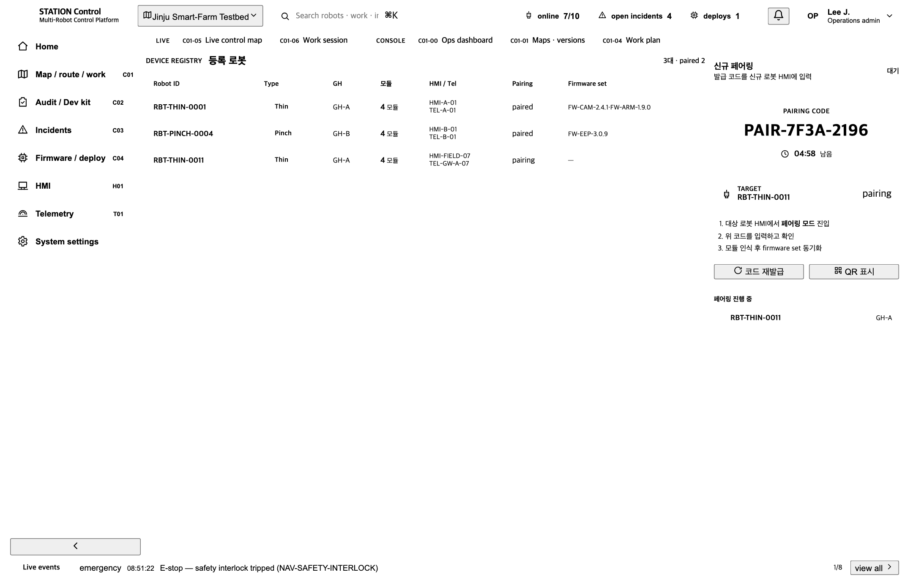
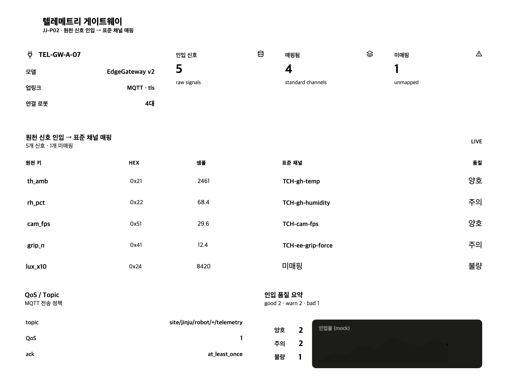
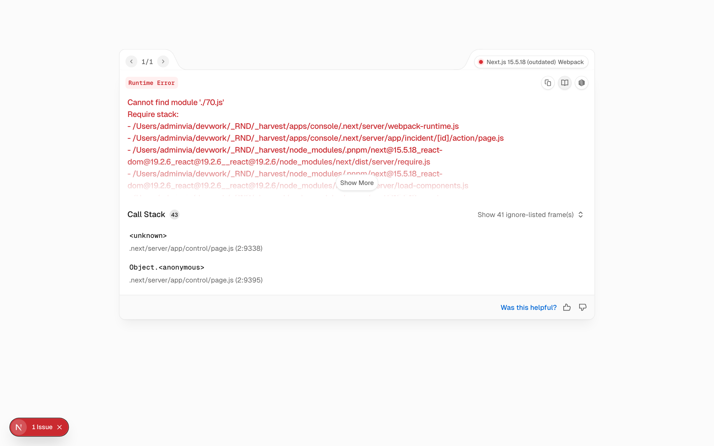
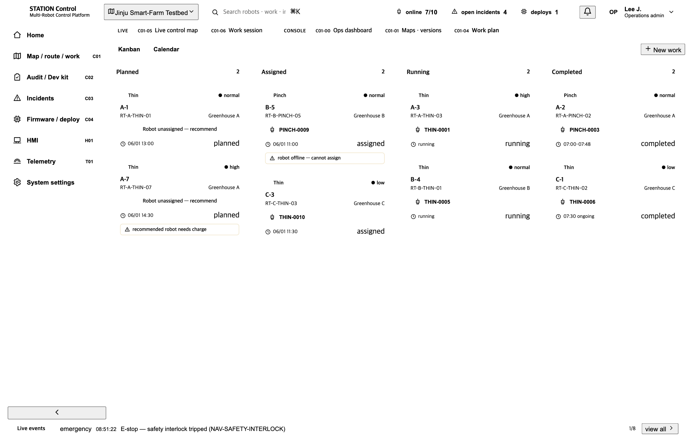
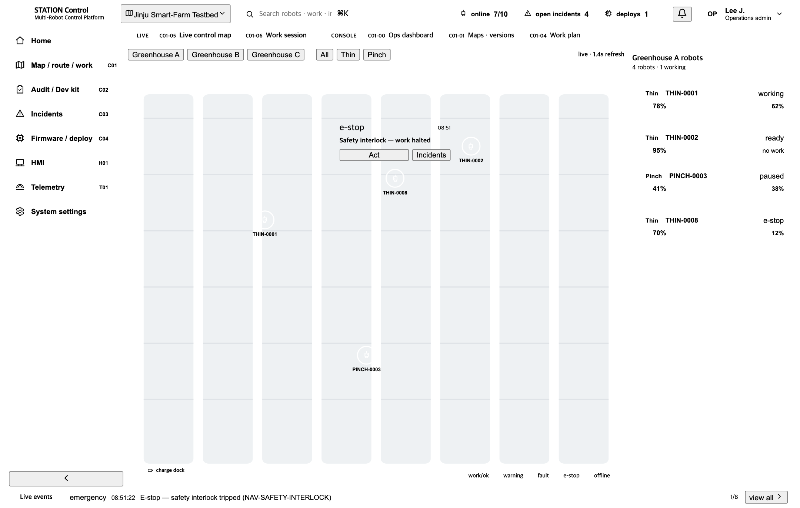
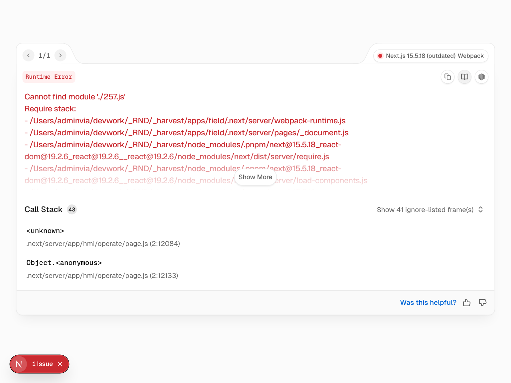

메타·에이지·대동·KIRO·농과원의 서로 다른 산출물로 조립된 로봇들을 — 비아 운영자가 한 화면에서 하나처럼 관제한다. 이기종 N대가 각기 다른 벤더 모듈로 구성됐어도, 6종 표준 계약으로 매칭돼 통합 대시보드·맵·작업계획이 동일하게 작동한다. 이 시나리오가 STATION이 "잇는" 일을 가장 직접적으로 보여주는 핵심 장면이다.





robot_id·work_session_id를 운반해, 관제실과 현장이 같은 세션 컨텍스트를 공유한다(끊김 없는 핸드오프).